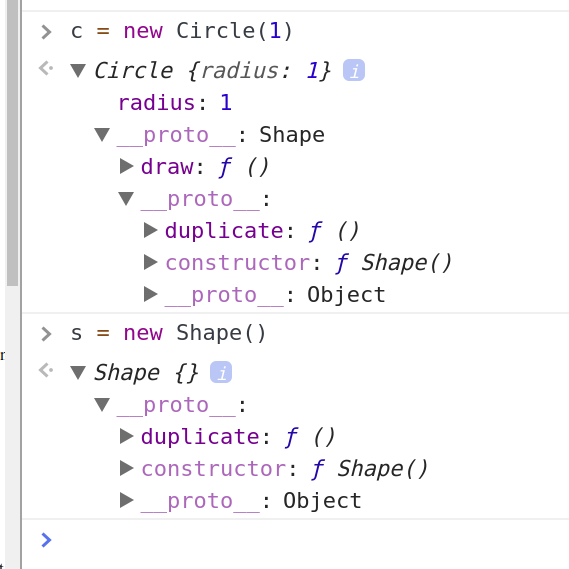

Value Types
Example of a setter/getter:
Object.defineProperty(this, 'defaultLocation', {
get: function() {
return defaultLocation;
},
set: function(value) {
if (!value.x || !value.y)
throw new Error("Invalid location value passed.");
defaultLocation = value;
}
});
Stop watch excercise
Inheritance:classical vs prototypical
how to do this with objects ?
circle == isa ==> shape
"prototype is a parent"
every object has a prototype
imagine there is a "objectBase" that everything inherits
circle ==> shape ==> objectBase
all objects have grandfather of objectBase
objects created by same constructor will have same prototype
Properties have attributes
configurable - can delete
enumberable - comes out in Object.keys()
writeable - can be assigned values
see example, but you move from object instance to a global method (associated with class) called prototype
its an optimization, used when you have many instances of an object.
stop watch version 2: prototype
point of this excerise is to show how abstraction
can be lost; have a look at the examples
your own inheritance. 
compositions
on 37 ...